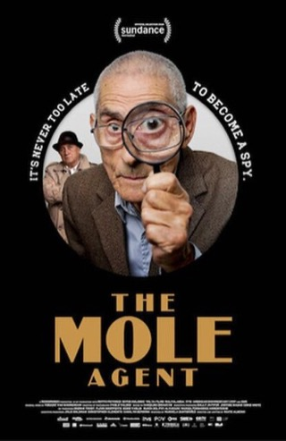

Surveillance & privacy
Spying, data collection and the people watched.
13 films · 12 sessions · 66 people
Often together with: Legal & safety for reportersWhistleblowers & leaksMigration & bordersTerrorism & national securityCriminal justice & prisonsRace & civil rights
Films
 The Black SwanMads Brügger2025 · 90 min
The Black SwanMads Brügger2025 · 90 min The Accidental SpyAnthony Wonke2024 · 98 min
The Accidental SpyAnthony Wonke2024 · 98 min IncidentBill Morrison2023 · 30 min
IncidentBill Morrison2023 · 30 min Phantom ParrotKate Stonehill2023 · 82 min
Phantom ParrotKate Stonehill2023 · 82 min American PainDarren Foster2022 · 106 min
American PainDarren Foster2022 · 106 min The Pegasus projectLaurence Topham2021 · 4 min
The Pegasus projectLaurence Topham2021 · 4 min United States vs. Reality WinnerOPENING NIGHT: United States vs. Reality Winner2021 · 94 min
United States vs. Reality WinnerOPENING NIGHT: United States vs. Reality Winner2021 · 94 min Enemies of the StateSonia Kennebeck2020 · 104 min
Enemies of the StateSonia Kennebeck2020 · 104 min MLK/FBISam Pollard2020 · 104 min
MLK/FBISam Pollard2020 · 104 min
The Mole AgentMaite Alberdi2020 · 89 min Bully. Coward. Victim. The Story of Roy CohnIvy Meeropol2019 · 98 min
Bully. Coward. Victim. The Story of Roy CohnIvy Meeropol2019 · 98 min The Feeling of Being WatchedAssia Boundaoui2018 · 87 min
The Feeling of Being WatchedAssia Boundaoui2018 · 87 min Hall of MirrorsEna Talakic, Ines Talakic2017 · 87 min
Hall of MirrorsEna Talakic, Ines Talakic2017 · 87 min
Sessions
- 2026 · Fri Nov 6 · 9:30amPanelRights from the Ground UpAnnie Sundberg, Will Thwaites, James McLaughlin, Seth Stern
- 2025 · Thu Oct 30 · 9:30 AMPanel · DX²One Step Ahead: Protecting Stories and Sources in a Shifting Legal LandscapeRenee Griffin, Alison Schary, Mary Inman, Micah Ratner, Sig Libowitz
- 2025 · Fri Oct 31 · 3:20pmPanel · DX²Subterfuge in Search of TruthMads Brügger, Ted Hope
- 2025 · Fri Oct 31 · 3:20 PMConversationSubterfuge in Search of Truth: Mads Brügger in Conversation with Ted HopeMads Brügger, Ted Hope
- 2025 · Sat Nov 1 · 1:00 PMWorkshopWorkshop: Digital Security in the Surveillance AgeAsh Guevara
- 2023 · Fri Nov 3 · 2:30 PMPanelEyes Everywhere: The Widening Net of Government SurveillanceKathleen McClellan, David Novack, Kate Stonehill, Emma Weil, Clayton Weimers
- 2022 · Sat Oct 15 · 10:00 AMWorkshop · DX²Obtaining Audio & Visual Materials Through Public Records RequestsGunita Singh, Ken Klippenstein, Lauren Feeney
- 2021PanelINSIDE <em>DAY OF RAGE</em>Sheila S. Coronel, Haley Willis, Malachy Browne, Dmitriy Khavin
- 2021 · Wed Oct 13 · 3:30pmPanelThe Surveillance TrilogyKatherine Fehr Chandler, Jesselyn Radack, Ines Hofmann Kanna, Sonia Kennebeck, Katie Townsend
- 2017 · Thu Oct 19 · 10:30 AMPanelProtecting Sources & Subjects in a (Newly) Hostile EnvironmentLyric Cabral, Laura Handman, Sonia Kennebeck, Brian Knappenberger, Mike Thomson
- 2016 · Fri Oct 7 · 9:30 AMPanel · DX²Color Bars: Race, Police Conduct and the Camera’s EyeCheryl W. Thompson, Craig Atkinson, Lyric Cabral, Gan Golan, Jamie Kalven, Kevin Christopher Seltzer, Julien A. Terrell, Chris Seltzer
- 2015 · Fri Oct 2 · 3:00 PMScreening eventCrossing Boundaries, then and now: A Case Study of 1971 featuring activists of “the burglary” and Edward SnowdenCharles Lewis, Johanna Hamilton, David Kairys, Betty Medsger, Edward Snowden, Bonnie Raines, John Raines
People most involved
- Mads BrüggerPanelist, filmmaker · 2025
 Sonia KennebeckPanelist, filmmaker, workshop leader · 3 editions, 2017–2021
Sonia KennebeckPanelist, filmmaker, workshop leader · 3 editions, 2017–2021- Assia BoundaouiPanelist, filmmaker · 2 editions, 2017–2018
- Kate StonehillPanelist, filmmaker · 3 editions, 2022–2025

- Johnny HoworthFilmmaker, panelist · 2024
 Lyric CabralPanelist, filmmaker · 3 editions, 2015–2017
Lyric CabralPanelist, filmmaker · 3 editions, 2015–2017
- Ena TalakicFilmmaker · 2017
- Ines TalakicFilmmaker · 2017
- Edward Jay EpsteinFilm subject · 2017
- Ivy MeeropolFilmmaker, panelist · 2 editions, 2019–2025
 Darren FosterFilmmaker · 2022
Darren FosterFilmmaker · 2022
- Bill MorrisonFilmmaker · 2023
- Anthony WonkeFilmmaker · 2024
- Blerim SkoroFilm subject · 2024
- Amira SmajicFilm subject · 2025

- Sam PollardFilmmaker · 2020
 Laurence TophamFilmmaker · 2021
Laurence TophamFilmmaker · 2021- Maite AlberdiFilmmaker · 2020
- OPENING NIGHT: United States vs. Reality WinnerFilmmaker · 2021
- Johanna HamiltonFilmmaker, panelist, workshop leader · 2 editions, 2015–2018
- Betty MedsgerPanelist · 2015
- Edward SnowdenPanelist · 2015
- Bonnie RainesPanelist · 2015
 Craig AtkinsonPanelist · 2016
Craig AtkinsonPanelist · 2016